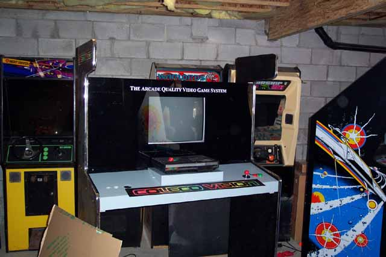

So, lets get back on track...
Plexiglass is mounted using some 1" wide head wood screws.
I've put in four so far just around the corners. An additional
four more should be put in, 1 on either side of the pedestal and when the
top header is done, the other two will be equally spaced across the top
to match the other two installed on either side of the pedestal so there
is some uniformity.

As I mentioned, the vinyl lettering matching the original kiosk really does make the proper effect, the TV is now resting on the shelf and its a perfect fit. A note about the TV and the TV shelf. The TV shelf sticks out slightly from the back, this is due to the depth remaining, only 10" or so. Unless you plan to go with something like a LCD flat screen or other thin device, its going to stick out a bit in the back. Not much you can do about that and it just means the kiosk is going to sit a small amount away from the wall which is not a problem anyway.
Just
placing the header graphic down on the front of the kiosk to check width
and height. Looks like it'll be a perfect fit and the proportions
are correct. The Original kiosk graphic is slightly different,
the colors are INSIDE of the lettering and there is a white outline around
the lettering. I couldn't find that image in a clean
enough format, this graphic was readily available and a friend sent it
to me in a high res scan so I cleaned it up quite a bit and converted it
to the Adobe EPS format (1 Bit TIFF) which the graphics company required.
Lets work on getting the control panel wired up. Now, the Colecovision fortunately uses the same pinouts as an Atari joystick so that made life a lot easier. Now I needed to figure out what pin was for fire button #2 on the Coleco controller I looked up a couple of Colecovision sites and read the Colecovision Faq and was left scratching my head about the pinouts of the Coleco controllers. The best approach is the direct one, so I took apart my Coleco Adam controller and using a multimeter that has a diode meter setting I tested out the controller and located fire button #2. Here are the pinouts:
Looking at the joystick connector:
| Pin #1 | Fire Button # 2 |
| Pin #2 | Right |
| Pin #3 | Left |
| Pin #4 | Down |
| Pin #5 | Up |
| Pin #6 | Not Connected |
| Pin #7 | Common |
| Pin #8 | Not Connected |
| Pin #9 | Fire Button # 1 |
I looked at several spare
controllers to use their joystick cables for the project. At
first I figured, the Atari Video Touch Pad (which was included with Atari
2600 Star Raiders) would be a good candidate, however Pin #7 is not used
on the cable so that ruled that controller out. So I
looked at a spare pair of Atari 2600 keypad controllers. These
cables have all 9 pins wired up so its the most ideal candidate.
The color code of the Atari keypad cables are:
| Pin #1 | Green |
| Pin #2 | Yellow |
| Pin #3 | Orange |
| Pin #4 | Red |
| Pin #5 | Brown |
| Pin #6 | White |
| Pin #7 | Grey |
| Pin #8 | Violet |
| Pin #9 | Blue |
Okay, so now that we have the needed connection info, time to wire up the arcade joysticks and fire buttons. You can later on (using a Y cable), add a Champ Keypad or modify an existing Coleco controller to be just a keypad and add it onto the control panel. You can either do that or simply add a Y cable and leave a pair of Coleco Controller in the Colecovision on the Control Panel Pedestal to select your game & players.